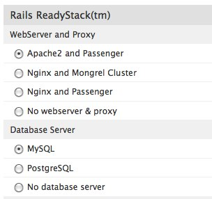

Rapid Application Deployment with Git
Our Rapid Application Deployment stack allows you to deploy any Rails or Rack application as easy as pushing a git change you made. You just have to install Webbynode’s gem and run a couple of commands, based on the same git workflow you’re used it.
Once you submit your app for deployment, all the dirty work will be done behind the scenes for you.
Requirements
- Webbynode account (don’t tell me!)
- Unix-based system: Linux, Mac OS X, …, but not windows (yet)
- Ruby, RubyGems, Rails. Yes, the full gang!
- git
Preparation
In order to use the Rapid App Deployment, you have to redeploy your Webby with this stack, but this just has to be done once. After that, you’ll be able to add new apps on the fly, without loosing what’s already configured on your Webby.
Here’s a step-by-step guide of the options you need to choose:
Choose the Rails ReadyStack

Choose WebServer and Proxy and Database Server
Right now both Apache2 and nginx with Passenger are supported. Both databases – MySQL and PostgreSQL – are also supported.

Choose Rapid App Deployment option

Configuration
There are a couple of configuration settings you can choose before deploying:
App Base Path
That’s the directory where all your apps will be deployed.
Let’s say you deploy 3 applications, called blog, todo and shopping_list. Here’s how your Base Path folder structure will look like, assuming you kept the default value of /var/rails:
var
`- rails
|- blog
|- todo
`- shopping_list
Password for deploy user
This is the password you’ll have to type when deploying.
An user called git is always created when installing the Rapid App stack. This option let’s you pick a password for this user.
Rack frameworks
Pick what Rack Frameworks RubyGems you want to install.
If you’re planning on deploying some Sinatra, Ramaze, Rango or Merb apps, it may be a good idea to bootstrap your Webby with the corresponding gems. This way you avoid having to log into your Webby to install them. Choose as many as you want.
Bootstrapping
To bootstrap your first application, first you need to install Webbynode’s RubyGem:
$ sudo gem install webbynode
-=-=-=-=-=-=-=-=-=-=-=-=-=-=-=-=-=-=-
Webbynode deployment gem
-=-=-=-=-=-=-=-=-=-=-=-=-=-=-=-=-=-=-
This deployment engine is highly experimental and
should be considered beta code for the time being.
Commands:
webbynode init Initializes the current app for deployment to a Webby
webbynode push Deploys the current committed code to a Webby
Successfully installed webbynode-0.1.2
1 gem installed
Once it’s done, you have to initialize your app. The first piece of information you’ll need for that is your Webby’s IP. If you don’t know it yet, go to Webbymanager and, once you login, you’ll find it next to your Webby’s name:

Now that you know the IP, you need to know whether you want this application’s virtual host to respond to an already registered and configured domain or if you want to get a *.webbyapp.com subdomain (if you are in doubt, go with the second option). If you don’t have a domain, leave the second parameter blank below.
Let’s say you have created a Rails app called myapp. If you don’t specify the domain name during initialization, your app will respond to http://myapp.webbyapp.com.
Now run the command:
$ cd ~/dev/myapp $ webbynode init 208.88.125.207 Initializing deployment descriptor for myapp... Creating .gitignore file... Initializing git repository...
If your application doesn’t have a git repo, we’ll create one for you. After that, we’ll create a new remote source for this new git repo called webbynode pointing to your Webby’s IP.
However, if you app already has a git repo, we’ll just create the new remote as described above.
And your app is now ready to be published.
Publishing
To publish your application all you need is to run the push command using the Webbynode gem:
$ webbynode push Publishing myapp to Webbynode... mkdir: created directory `myapp' Counting objects: 86, done. Delta compression using up to 2 threads. Compressing objects: 100% (72/72), done. Writing objects: 100% (86/86), 82.72 KiB, done. Total 86 (delta 11), reused 0 (delta 0) Checked out master branch ---------------------------- Webbynode git deployment ---------------------------- Deploying application myapp as myapp.webbyapp.com... Configuring Rails application... => Configuring apache vHost... => Configuring database... => Configuring database.yml... => Installing missing gems... => Migrating database... /var/rails/myapp/.git Restarting apache... Setting up DNS... myapp deployed successfully. Created http://myapp.webbyapp.com/ To git@208.88.125.207:myapp * [new branch] master -> master
At this point you should be able to open your browser and visit http://myapp.webbyapp.com and get your Rails app default page.
Updating
To update an already published app, you just have to follow the git workflow. After your changes have been saved, you’ll have to commit them:
$ git add . $ git commit -m "My lovely changeset"
And then, again:
$ webbynode push Publishing myapp to Webbynode... mkdir: created directory `myapp' Counting objects: 86, done. ...
And that’s it. The same process will happen again.
This very same process can be done for Rack applications, as long as you have the necessary gems installed during the preparation of your Webby.
Troubleshooting
Problem: I have deployed my application just fine but when I make changes and do a webbynode push nothing changes on the website.
Resolution:
Sometimes you may have forgotten to commit your changes and try a webbynode push.
In order to make sure, try issuing the git status command. If you have made no changes since your last commit, here’s what you should see:
$ git status # On branch master nothing to commit (working directory clean)
However, if you find that you still have changes – and specially new files:
$ git status # On branch master # Untracked files: # (use "git add <file>..." to include in what will be committed) # # this_is_a_new_file.txt nothing added to commit but untracked files present (use "git add" to track)
If that’s your case, it’s just a matter of adding the new file and committing the change. You’ll see that after that you’ll get nothing to commit:
$ git add . $ git commit -m "Added this_new_file" [master d30cb5b] Added this_new_file 1 files changed, 1 insertions(+), 0 deletions(-) create mode 100644 this_is_a_new_file.txt $ git status # On branch master nothing to commit (working directory clean)
Another webbynode push should take care of your problem.
However, sometimes Apache (or nginx) can choke upon restarting. This problem is usually solved by logging into your Webby and manually restarting them:
$ /etc/init.d/apache2 stop * Stopping web server apache2 ... waiting $ /etc/init.d/apache2 start * Starting web server apache2
or
$ /etc/init.d/nginx stop * Stopping Nginx Server... [ OK ] $ /etc/init.d/nginx start * Starting Nginx Server... [ OK ]
If none of the above approaches solve your problem, log into your Webby, delete the app and start over (see next section for information about how to do it).
Problem: After deploying a Rack application with Sinatra / Merb / Ramaze / Rango framework, my website doesn’t load.
Resolution:
This is usually caused because you don’t have a public directory inside your Rack app. In order to successfully deploy to Apache/nginx + Passenger, such folder is mandatory – as can be seen on the passenger docs here and here.
Try adding the public folder (and any contents into it, so git allows you to commit a change) and pushing again.
Deleting apps
If by any chance you want to remove a running app, it’s just a matter of logging into your Webby and using the delete_app script, as illustrated here:
$ delete_app myapp This will delete your app myapp and restart Apache. Are you sure? (y/n) y Deleting app at /var/rails/myapp... Removing vHost for myapp (myapp.webbyapp.com)... Restarting Apache...
And now, what you’re waiting for? Get on the deploy early bandwagon.